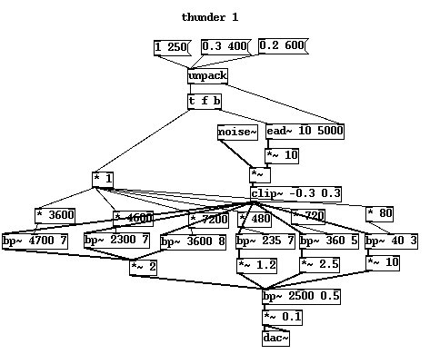
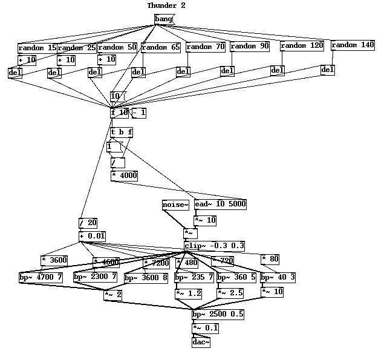
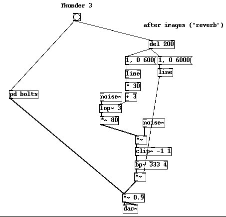
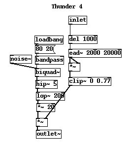
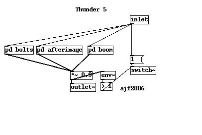
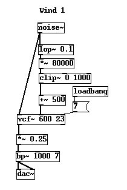
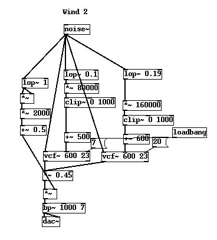
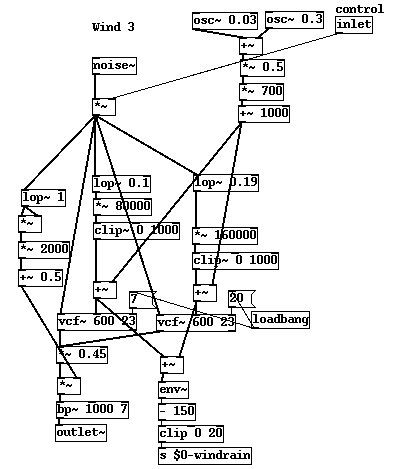

To conclude this part on natural forces let's go out on a bang and get into the spirit for the next part on man made mayhem. We are going to build a natural soundscene of a storm. Some more weather elements are needed to complete the picture and two missing things that really help are thunder and wind. I left these till now because we needed to understand formants and spectra a little more first.
Have you ever been in a thunderstorm where the lightning bolts were falling all around you literally a few meters away? It's very scary. What with all the weird chlorine like ozone smell and the hairs standing up on your head you might not notice that lightning doesn't sound remotely like it does in films. Not up close. Dealing with high intensity sounds is problematic. As we will explore in much more depth in the next part on firearms the experience of shockwaves has less to do with what you hear than the sensations you feel. Recordings of such intensity are rare because few microphones can handle the dynamic range. If you had a tape or digital recorder with you, when you listen to it back all you will hear are some distorted clicks. All recordings of thunder you hear are from at least a kilometer from the lightning. When we make explosions and suchlike we have to use a lot of artistic licence because the real sounds just don't translate well into a recorded media. The lightning we are going to make next is what I call Scooby Doo lightning. It's actually closest approximation of the sound of distant sheet lightning which normally happens at high altitude as it moves across the sky. The kind of bolts that hit the ground* are usually single discharges that just go BANG!
* The direction is interesting - lightning doesn't "come down", it reaches up, the flow of electrons is from a negative ground up towards a positive sky, but the path is chosen by positive ions coming down so that the bolt kind of meets in the middle - see refs.Thunder is the sound of lightning so let's use the correct terms. What gives thunder it's interesting quality is the interaction with the environment. Much of what you hear are echoes from things like buildings on the ground, clouds and a process known as refraction. The actual bang, or with sheet lightning multiple bangs, are amazingly short events, almost impulses, but they do have a tone. That tone is to do with the air heating and we will look at it in more detail when we make a spark generator in a later exercise. The patch below attempts to emulate the essential features. Notice that the noise signal is overdriven and clipped. This markedly increases the amount of high frequency in it. The filters are attempting the resonance of a column of superheated air. In fact the filter values are chosen empirically while listening to the sound of a glass marble dropped on a tiled floor, a sound sample I have that is a very useful impulse to reference when making explosive noises.

For ScoobyDoo thunder to accompany your horror/vampire scenario a succession of about 5 to 10 bangs in quick sequence are needed. Let's model this initial crackling sound. It is another process that has a natural relaxation, again we will talk about this more when we build the spark machine, but basically we want the time between each bang to take an increasingly longer time. If you think of the electricity stored in a great reservoir like a barrel of beer then as we get to the bottom it comes out with less and less pressure. The first crack of the lightning has the hardest job to do, it must ionise air (oxygen and nitrogen and water) molecules to form a conductive path. The secondary sparks which follow in the ion trails carry a bit less energy. So remembering that frequency content is related to energy we can assume the later crackles are a bit lower in frequency than the initial sharp one. You have seen this PureData formation before, a chain of delays. The order in which you make the connections is very important here, start with connecting the random units so that each [del] atom is loaded with a definite value before we start to propagate a bang message through the chain, finally connect all the delays moving left to right. Each bang decrements a counter starting at 10, this value is used to derive both the center frequency of the noise bands and the decay time of the burst. We start with one short, sharp, bright "snap" and end on a long trailing noise burst of much lower energy.

Okay what about our echoes? The sound that arrives after the direct signal comes from many sources and has much more in common with reverb than a plain series of echoes. In fact a great tip for music production is to use time compressed thunder as an impulse response for a reverb which works beautifully on vocals, but that's another story. In a reverberation the echoes we hear are no longer distinct, as they combine from different sources they phase and distort to produce a rumbling that undulates in volume and tone. We could create a really complex reverb. That would be dandy for an expensive film production but as usual we are going to paint with broad strokes and an emphasis on efficiency suitable for realtime clientside use. We will use a chunk of distorted brown noise to get this effect. Sweeping the frequency range from about 30Hz down to 3Hz gets us the effect of the density thinning out, and bandpassing the whole thing though a 300Hz slot takes away the edginess of the clipping process to leave a nice mellow rumble.

Finally we get to the real trick in synthesising thunder. Not all waves travel at the same speed in real air. Refraction is the effect where some frequencies travel faster than others, normally because of water in the air or because of temperature differences. If you have listened to a large outdoor PA at a rock concert from the very back of the stadium or festival you will have noticed that sometimes the wind or mist can turn the sound into a swirly soup. The greater the distance the more noticeable this effect becomes. The lowest frequencies arrive later than the higher ones. Thunder which has travelled several kilometers to reach your ears demonstrates this quality very strongly. Sometimes there is as much as a few seconds difference between the arrival of the main bang and the boom containing bass frequencies. All these signals have travelled through the air but arrive in stages. This is subtly unlike the effect we consider with explosions next where some actually arrive first because they came through the ground. Air distorts the sounds in a storm because it's not uniform so our final deep rumble bears almost no relation to the other parts, it is in fact just a long slab of "black noise" significantly delayed from the rest of the sound.

So picture the entire effect now in terms of the noise colours. Starting with white, orange, then red speckles the initial attack is followed up with brown and finally black noise. Does this seem familiar? If you've animated explosions in visual media this sequence should make you think of the analogous process in which brief high energy bursts are followed by long after-effects of increasingly lower energy. The approach we have used here is analogous to simple animation. Instead of video frames we are animating textures, in this case just three of them. To make them flow into one another we must do sensibe things with their parameters.
The final cut below subpatches our three components for clarity. An addition to this patch we haven't seen before is a [switch~] unit. Thunder is a "one shot" effect like percussive drum noises in music. Once it's decayed away below an audible threshold we can shut off the entire DSP processing code to this effect to save CPU cycles. The code shown in this subpatch becomes inactive once it is no longer making a sound by the switch receiving a zero value from [env~] an atom returning the RMS amplitude of the signal in dB units. Again the order of connections is quite important, the switch needs to receive a 1 value first of all before the bang triggers the other subpatches.

Normally air moves around things with an even flow, called its "laminar" mode. Each bit of the air moves at a speed such that there are no big pressure differences between nearby volumes. Bernoulli determined that pressure decreases with speed, and so for a fluid to pass around an irregular object there must be some difference in speed because by geometry the air must take more than one unequal path, and therefore there must be a difference in pressure somewhere. At low wind speeds this difference is spread evenly over a smooth pressure gradient that follows the contour of the object. Right next to the objects surface is a so called "boundary layer" where the drag caused by frictional forces causes the flow to be greatly impeded. Right out a few inches or meters away from the object the flow is totally unaffected by the object. At all points between these extremes we normally find steady gradient. In this case the wind makes no sound. But when the speed of the wind increases a situation eventually arises where the difference in pressure between local flows is so strong it starts to affect the procession of the main flow. Temporary vacuums exert a force equal to or greater than the force of the wind pushing along and they pull in some air. But remember that air is an elastic/compressible gas. It doesn't like this imbalance so the forces caused by the pressure difference are counteracted. Instead of laminar streams the air begins to oscillate between unstable states of flow, or turbulence. These patterns radiate out as longitudinal sound waves. This is rarely a harmonic, well periodic movement. Normally turbulence is chaotic, or so complex it can't be perceived as an orderly function of time and we hear it as a rushing sound like noise. Some geometry, like perfectly round cables or poles produce a more focused, resonant effect that causes almost harmonic whistling, while irregular geometry like rocks and walls produce the rushing noiselike signals.
To properly synthesise wind we would need thousands of resonant filters, each corresponding to an object in the path of the air flow. As with our raindrops every source would actually be unique. But we will take the same shortcuts and use just a couple of noise generators and filters which gives us the first 99% of the sound we are after. In the patch diagram below notice we've used a [vcf~] block again. We need to be able to control the frequency only at a fairly low rate, but we want this change to be really smooth, so controlling at the audio rate gives us that advantage over using a control rate [bp~] which sometimes clicks when changing too quickly.

As usual we optimise by using one noise source to derive the signal and its control features. The next three atoms in the control block present an interesting point. Low pass filtering the noise to 100mHz leaves almost no signal amplitude at all. To recover the signal level a gain block of 80,000 is needed! Now, since noise is a random signal the output level of the filter is a statistical property, not a well determined fact, let's say that we suddenly had a run of low frequencies (a perfectly possible scenario if the source was truly random white noise), what would happen to the output? It would potentially hit ten or twenty thousand, well outside the range we want. So the [clip~] unit is something of a safety measure, most of the time it does nothing, it's just there to cap any improbable, but statistically possible event. Defensive coding is not only for the server farm. Raising the floor up to 500Hz and adding our random wobble gets us close to where we want to be. The "howl" of the wind is set by the vcf resonance, anywhere between 5 and 15 will give acceptable results.
A feature that perceptually identifies wind to us is parallel movement. Remember from Bigand and McAdams that sounds linked by an common underlying feature are assumed to have a common causal property. When wind rises and falls we expect to hear a chorus of whistles all rising and falling together. Simply adding one more filter separated by a few hundred Hertz is all it takes to bring the wind sound alive. I've chosen a higher resonance setting for the second filter to give it a bit more character. Another problem with our first patch remedied here is a flat amplitude. Low passing the noise at 1Hz and taking the square then partly recovering the signal to give us a reasonable fluctuation in level. Our defence against a low frequency run is that the signal must be always less than one, the square of which will also always be less than one.

Finally let's prepare our wind generator for inclusion in a larger soundscape. Some method of controlling the wind intensity is a good idea. We could control the levels of each filter output and frequency range separately, but it's more efficient to go back to the common source of noise and just control this level, all the other parameters will follow suit since they are derived from it. A minor addition is a couple of regular low frequency oscillators to gently increase and decrease the wind speed over a long period. Lastly we have derived a very useful control signal labeled $0-windrain, I bet you can guess how we will use this. Since the wind speed may have effects on other generators in our scene, like the rate of rain or the clanging of a street sign its nice to get a usable value right here and broadcast it to other potential generators.

The finished wind generator is just one part of this final demo patch to illustrate our accomplishments in mastering some elemental forces. The control sequencing is very simple. Explore the patch and see if you can make improvements.
That concludes this part on elemental forces. We have mastered fairly simple synthesis using only filters, oscillators and arithmetic to approximate some natural processes. The knowledge required for this has come mostly from the domain of physics, by knowing a few basic things about the processes happening in the real world we have been able to make synthetic approximations of the signals found in nature.